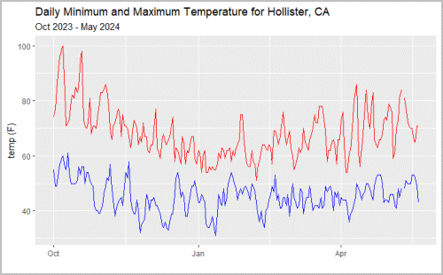
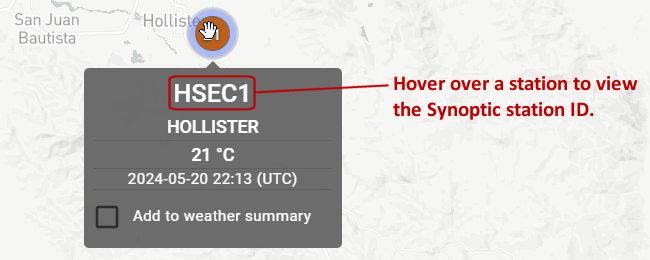

## Your answer hereHomework 2: Download and Plot Weather Station Data using the Synoptic API
1 Overview
In this exercise, you will import and plot a) temperature and b) precipitation data for a weather station of your choice using the Synoptic API. The outputs will look something like:



2 Preparation
2.1 1. Create a Synoptic Account
Create an account on Synoptic Data (instructions). Either an open access or a commercial trial account will work. Create a private key and public token. You will use your public token when calling the API.
2.2 2. Select a Weather Station
Open the Synoptic Data Viewer: https://viewer.synopticdata.com/
Zoom and pan to find the station of your choice. Try to find a weather station that records both temperature and precipitation (this includes stations in the CIMIS network, RAWS, Global METAR, and others).
Click on a station to view the station ID and data availability.

2.3 3. Read the docs
Read the documentation for the Synoptic time series end point. Take note of:
- the base URL
- parameters (required and optional)
Tip: You can test your request with the Synoptic Query Builder: https://demos.synopticdata.com/query-builder/
3 Part 1. Download hourly temperature data, compute daily min and max, and plot
3.1 Create the API Request
Create an API request object for the Synoptic Time Series End Point, getting hourly temperature and precipitation data for the station of your choice from Oct 1, 2023 thru yesterday (i.e., the current water year).
3.2 Perform the request
## Your answer here3.3 Convert the response into a tibble
TIP: You can convert NULL values in a list to NAs with purrr::modify_if(). Example:
List of 4
$ a: num 1
$ b: num 2
$ c: NULL
$ d: num 4List of 4
$ a: num 1
$ b: num 2
$ c: logi NA
$ d: num 4## Your answer here3.4 Aggregate by day
As can be seen above, the daily we got is hourly. So we need to compute the minimum and maximum temperature by day.
## Your answer here3.5 Plot the minimum and maximum daily temperature
## Your answer here4 Part II (Bonus): Download and plot daily prepcipitation
TIP: To download the precipitation values, you can re-use most of the contents of your temperature request object, but change the vars parameter to precip, and add precip = 1 to enable derived precipitation (see the Time Series endpoint docs for details).
4.1 Create the request object
## Your answer here4.2 Perform the request
## Your answer here4.3 Convert the body to a tibble
## Your answer here4.4 Compute the daily totals and plot them as a column chart
## Your answer here4.5 Plot the accumulated precipitation
## Your answer here4.6 What was the total accumulation this water year?
## Your answer here